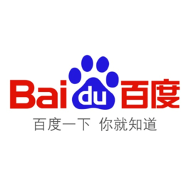

百度（纳斯达克：BIDU），全球最大的中文搜索引擎、最大的中文网站。百度愿景是：成为最懂用户，并能帮助人们成长的全球顶级高科技公司。
“百度”二字，来自于八百年前南宋词人辛弃疾的一句词：众里寻他千百度。这句话描述了词人对理想的执着追求。1999年底，身在美国硅谷的李彦宏看到了中国互联网及中文搜索引擎服务的巨大发展潜力，抱着技术改变世界的梦想，他毅然辞掉硅谷的高薪工作，携搜索引擎专利技术，于 2000年1月1日在中关村创建了百度公司。百度拥有数万名研发工程师，这是中国乃至全球最为优秀的技术团队。这支队伍掌握着世界上最为先进的搜索引擎技术，使百度成为中国掌握世界尖端科学核心技术的中国高科技企业，也使中国成为美国、俄罗斯、和韩国之外，全球仅有的4个拥有搜索引擎核心技术的国家之一。
从创立之初，百度便将“让人们最平等便捷地获取信息，找到所求”作为自己的使命，成立以来，公司秉承“用户至上”的理念，不断坚持技术创新，致力于为用户提供“简单可依赖”的互联网搜索产品及服务，其中包括:以网络搜索为主的功能性搜索;以贴吧为主的社区搜索，针对各区域、行业所需的垂直搜索;以及门户频道、IM等，全面覆盖了中文网络世界所有的搜索需求。根据第三方权威数据，在中国，百度PC端和移动端市场份额总量达73.5%，覆盖了中国97.5%的网民，拥有6亿用户，日均响应搜索60亿次。
